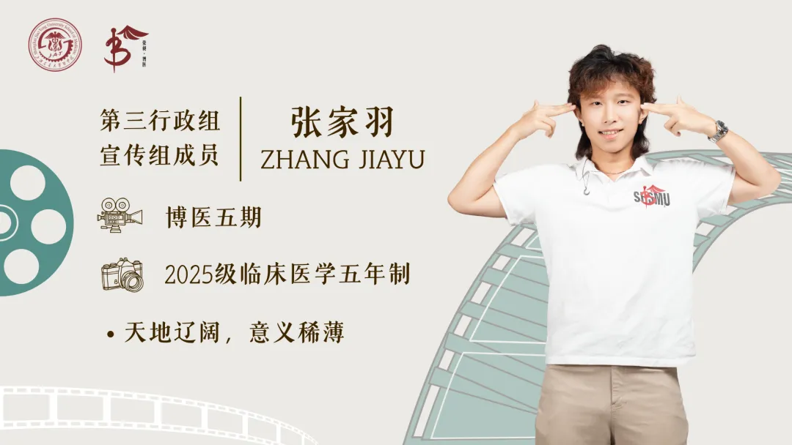

博医之声
“博医之声”是由上海交通大学医学院“荣昶-博医”卓越医学生培养计划推出的学员分享专栏，博医学子将结合自己在医学道路上求学、求知、求真的成长经历，以及对医疗和社会的观察实践，博采众长，用语言文字多维度呈现博医学子的深入思考与责任担当。
学员分享

“医生离了设备就不会看病了吗？”
“医生现在只有对着检查单才知道我得的什么病吗？”
“我这病一看就是xxx病，给我开那么多检查是不是过度医疗？”
...
在生活场域中，这些话我在日常交谈和诊室外不止一次听到。这可以引出一个很有价值的问题，为什么很多时候医生的诊疗沟通完全符合科学指南与国家卫生政策指导，却仍时常引起患者的误解呢？
我们可以从医学的语言学属性去看问题。这种患者生活世界语言与专业医学语言之间在编码方式、意义结构与表达目标上的差异性所带来的诸多问题，我们暂且称为“语言的断裂”。接下来我将结合福柯的经典著作《临床医学的诞生》来尝试阐述。
传统前临床医学更多关注的是主观的感受，譬如福柯所言，一个病人来到医生跟前，过去的医生会问“怎么不舒服"("What is the matter with you?”)，而现代临床医学倾向于问病人“哪里不舒服"(“Wheredoesithurt?”)。这看起来就是一个无关紧要的、文法上的无趣改变，但是实际上前一种会更加关注病人身为一个人类个体的生命整体性，而后一种则希望看到的是我们称之为“病灶”的东西，疾病被认识的条件发生了变化。
临床医学和传统的分类医学（福柯认为18世纪主流的前临床的医学形式是分类医学）最大的不同就是，临床医学不再拘泥于先有一个完整的疾病理论，然后再去寻找症状来证明它的形而上学逻辑;而是在症状的排列、组合、重复和差异中，逐渐形成疾病的可知性。
“凝视”具有生产知识的特权。“看”首先是一种光学行为。眼睛接受光线，形成图像，主体通过清晰分明的观念获得确定性。但在现代临床医学中，这个“凝视”指的不再只是生理意义上的视觉活动。医生的眼睛并不是普通的眼睛，而是经过训练、被制度支持、被语言组织起来的眼睛。临床凝视之所以重要，正是因为它不是单纯的看，而是一种能够把身体表面转化为知识对象的看。如果把福柯的概念延展到当代，CT、MRI和实验室指标可以被视为技术所中介的临床凝视。
于是出现了某些本体论差异：不是因为这个病它就在那，所以我们要通过观察和检验找一些能证明的病例来展示一下这东西存在，治疗反而会破坏疾病显示其自身的能力（分类医学时代，医生治病真有可能靠让病人“挺”到病程结束，来满足疾病的“生理过程”与“自然秩序”）；而是我的观察、检验和治疗的过程，本身就是在生产关于这个病的知识，我用了这个药，他好了，那这个经验就可以进入这个知识体系里了，下次别人可以参考着接着用。临床凝视带来的就是病人“被观看”的不自在感，一定程度上福柯的用词也体现出这个过程病人主体性的丧失。
到了这里，医学的知识可以开始大规模自我繁殖。随着这种生产型的知识装置生产出天文数字的医学经验，医生逐渐变成了知识体系的代言人。来到医院的病人，要面对的是整个临床医学体系“上帝之眼”的冰冷凝视在技术上的体现。
在这种语言的断裂之中，我们现在或许能够理解一个看似荒谬的现象了：为什么21世纪的现代医学拥有远超任何时代的循证医学体系，许多的患者和大众却仍然愿意相信那些证据薄弱、甚至带有神秘主义色彩的医疗解释。问题未必仅仅是所谓的“科学素养不足”。一个患者来到医院，说自己“浑身没劲”“胸口堵得慌”“整个人就是不对劲”，现代医学首先要做的是，把这些“模糊而整体的生命体验”拆解为可以分析的现代医学语言：乏力持续了多久，有没有发热，血红蛋白是多少，心电图是否异常，CT片子上有没有病灶。这个过程产生了语言的专业化差异。
医疗实践的特殊性之一，在于它不仅通过知识描述人的身体，还可能通过检查、药物和手术直接介入一个人的生命过程：技术操作能够直接改变其身体状态，诊断与风险判断则可能重塑生命过程。手术是一个集中的体现。麻醉之后，患者暂时失去了对自身处境的感知、表达与自我保护能力，其身体由此进入医疗团队的技术场域。然而，麻醉可以使患者的主体性在经验上暂时沉默，却不能使其在伦理层面消失：手术造成的疼痛、功能变化、并发症乃至生命风险，最后还是患者本人来承担的。因此，患者的身体成为术式直接介入的客体，患者本人却始终是权利、利益和医疗后果的主体。手术中的信任也由此超出了普通的人际信赖：它是在知情同意、专业责任和制度保障之下，对身体自主权作出的有条件的一种托付。部分患者对手术的恐惧，正可以被理解为对这种“让渡控制却承担后果”的高度不对称状态所产生的合理反应。
滑动完成拼图， “看见”患者
归根到底，我们不能期待语言鸿沟的彻底消失，专业化本身就必然产生自己的术语、分类和表达方式，但它可以通过更充分的解释、更有效的倾听以及更平等的沟通不断缩小。作为医学生，我们或许有理由保持一种谨慎的态度：
医学技术仍在迅速向前发展，而现代医学也开始越来越清楚地意识到，一种真正成熟的临床实践应该除了训练我们去准确地认知疾病，也要求我们始终记得，疾病正在发生在一个具体的人身上。
事情在逐渐向好发展，我始终坚信可以相对乐观地看待临床医学语言的处境。
关于博医
上海交通大学医学院“荣昶-博医”卓越医学生培养计划是上海交通大学医学院在上海荣昶公益基金会的支持下决定开展，具体由共青团上海交通大学医学院委员会组织实施的培养计划。该计划以践行有灵魂的卓越医学创新人才培养为理念，发挥上海交通大学医学院在医学教育及医疗卫生服务领域的综合优势，聚焦面向未来的卫生健康领导力，培养具有人文素养、创新思维、家国情怀、领袖气质、全球视野的高层次“医+X”卓越医学创新人才，担负起健康中国建设使命。
部分图片来源于网络或AI生成
文案丨博医计划五期学员 25级临五 张家羽
排版丨博医计划五期学员 25级临五 陈奕萱